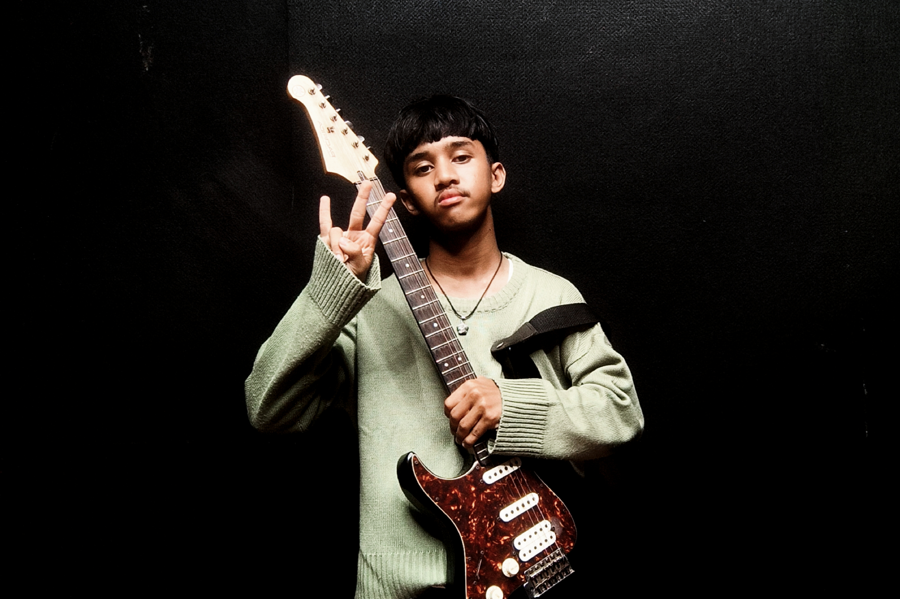

Hi! Aku Jibran Diaz

About Me
Perjalananku sama musik ini sebenernya udah lumayan panjang sejak masih SMA. Tiba-tiba aja waktu itu aku keracunan parah sama band Nirvana. Spirit Kurt Cobain, Krist Novoselic dan Dave Grohl membawa aku menuju dunia bawah tanah.
Sekali denger distorsi Kurt Cobain, isi kepalaku kayak langsung kebalik. Ternyata nggak butuh skill gitar sekelabuat bikin karya yang nancep ke ulu hati. Murni cuma butuh energi mentah sama emosi yang tumpah ruah. Dari situ aku mulai sadar kalau jalan hidupku emang harus dihabiskan di sini.
Terus kenapa akhirnya aku nekat milih merantau jauh-jauh ke Medan?
Kuliah mah emang alasan resminya aja buat orang tua. Ambisi utamanya jelas karena aku ngelihat ekosistem gila di skena musik kota ini. Medan dari dulu udah punya reputasi sebagai Hardcore City. Atmosfer underground-nya beneran hidup dan selalu menolak punah.
Lingkungan berisik inilah yang akhirnya ngasih ruang buat aku berekspresi seliar mungkin. Mulai dari nge-gigs di proyek band pertamaku sampai sekarang fokus penuh ngebangun LIZZY bareng anak-anak. Kota ini terus nempa mental bermusikku jadi makin keras. Musik bukan cuma soal hobi genjreng doang buatku sekarang. Ini cara paling nyata buat bertahan hidup dan nyuarain realita yang sering bikin muak.